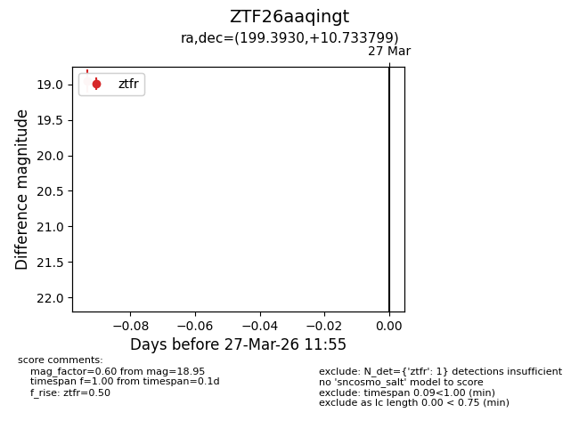
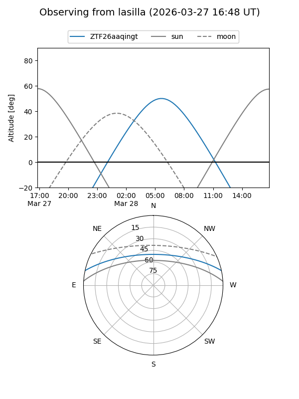
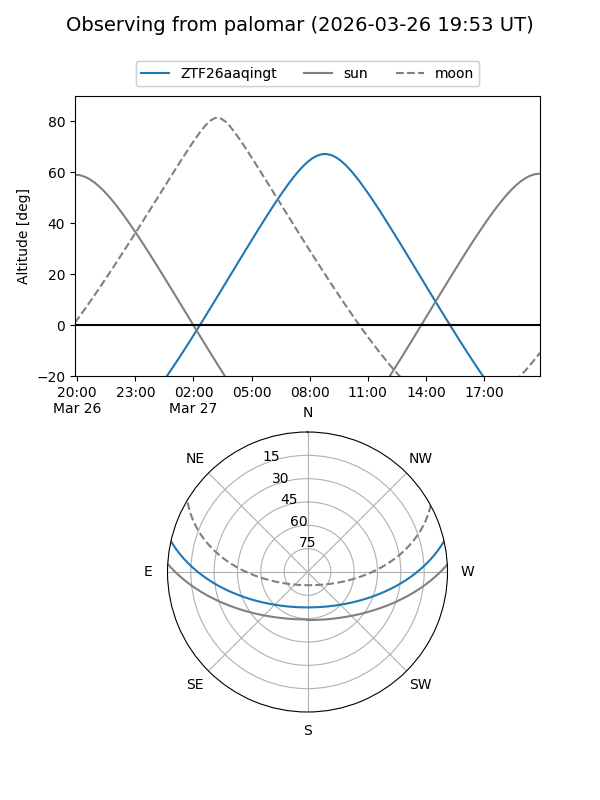

ZTF26aaqingt
Target ZTF26aaqingt at 2026-03-27 11:58
Aliases and brokers:
FINK: link
Lasair: link
ALeRCE: link
alt names
ZTF26aaqingt (ztf,fink_ztf)
Coordinates:
equatorial (ra, dec) = 199.3930,+10.73380
equatorial (HMS+DMS) = 13:17:34.33,+10:44:01.68
galactic (l, b) = (324.7437,+72.48959)
Flags:
Photometry:
last ztfr=18.95
1 ztfr detections
Lightcurve

Visibility


Additional plots